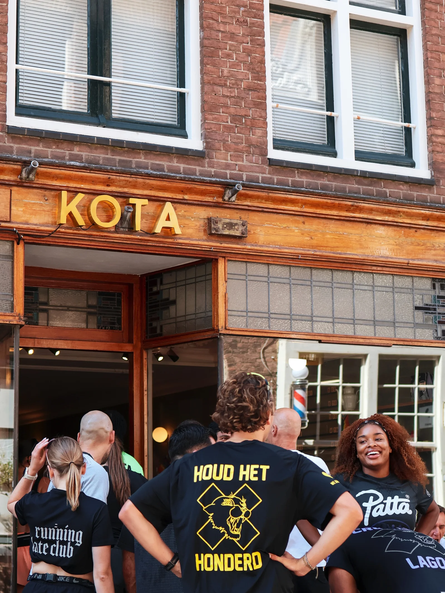
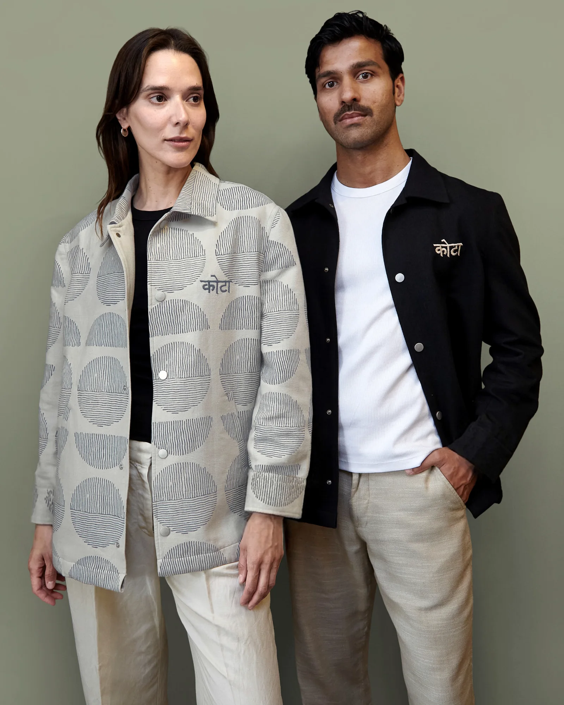

Chai, brewed by hand
Real chai made from scratch, golden turmeric lattes and specialty coffee on the Staalstraat. Rooted in India, made in Amsterdam.
Slow, spiced, never from a powder, every single cup.
Rooted in India, Made in Amsterdam
From the streets and homes of Rajasthan to a café on the Staalstraat. Every cup, and every thread, carries a story.
Loved by Our Neighbourhood
based on 424 reviews
“The most delicious Chai Latte I’ve ever tried.”
“The saffron chai was one of the most authentic desi chais I’ve had outside India.”
“Love the place! The vibe is absolutely desi. Ditch the coffee, try the tea.”
“Great coffee, authentic chai, delicious snacks and a story worth supporting.”
“The chai cake was not too sweet, just the right balance.”
“Lovely place, different to other cafés. The staff made it extra nice.”

Come Sit at the Bar
Our bar was designed to bring people closer: sit side by side, start a conversation, stay a little longer.
Visit us →Find Your Favourite
Never Have a Chai Alone
Our favourite combinations, the way they’d be served at home in India.
Saffron Chai + Samosa
The pairing every Indian grew up with. Warm, spicy, comforting.
Non-Dirty Chai + Chai Cake
Spice on spice, softened by coffee foam. Not too sweet.
Rose Latte + Bhakarwadi
Floral and caffeine-free, with a crunchy, savoury bite.
Chai Isn’t Made From Powder
Our own spice blend: cardamom, ginger, cinnamon and clove.
Black tea and spices simmered slowly, by hand, every day.
Milk goes in last, and the chai is poured the moment you order.
Sit side by side at the bar. The best part of chai is the conversation.

A Café With a Purpose
KOTA was never meant to be just a café. Every month, 2% of our sales supports women artisans in India, and our handcrafted overshirts and tote bags carry their block-printing craft to Amsterdam.
- 2% of monthly sales to women artisans
- Chai spice & turmeric mixes to take home
- Block-printed overshirts and totes
Sit Side by Side
Arrive alone, leave knowing someone new. The bar was built for conversations.
Best for · meeting peopleChai, Runs & Talks
Run clubs, founder meet-ups and community nights. Follow our Instagram for the next one.
Best for · communityFrequently Asked Questions
Everything you want to know before you drop by
At Staalstraat 14H, one of the quietest and prettiest streets in the centre, near Waterlooplein.
Monday to Thursday 09:00–17:00, Friday and Sunday 09:00–18:00, Saturday 09:00–19:00.
Never. Our chai is brewed from scratch, by hand, with our own spice blend.
Yes: the Golden Turmeric Latte and the Rose Latte are both naturally caffeine-free.
Every month, 2% of our sales goes to supporting women artisans in India.
Yes. Our Chai Spice Mix and Turmeric Latte Mix are for sale at the bar.